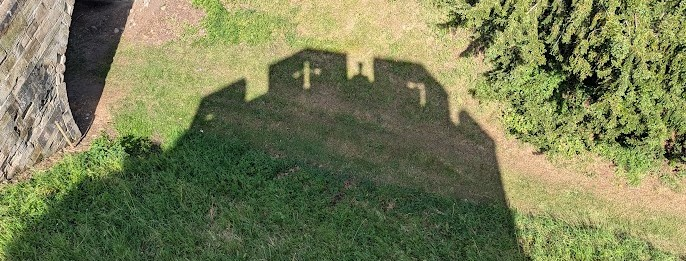

Teaching Philosophy

Hello!
When I wrote my first philosophy of teaching, I said that I chose to teach because I was passionate about the content I was teaching. That is still true, but after a few years in the classroom, I have discovered a new depth of satisfaction that has kept me teaching. A Humanities classroom should be a place where students are encouraged to engage with the world, all of the beauty, tragedy, intrigue, and comedy of the human experience. To do that, students need a space where they can share their perspectives, have those perspectives challenged, and challenge the perspectives of others.
My goal for students in a Humanities classroom is to build proficiency in their historical thinking skills. These include ability to critically engage with historical, cultural, and economic sources, build arguments from those sources, and reinforce these arguments with evidence. I recognize that not every student shares my passion for the Humanities, but in this era of information saturation, unique in human history, these skills are crucial to filter out the garbage in the search of truth. The Humanities are the cornerstone of an educated citizenry that is so important in maintaining a democratic nation.
To help students develop these skills, I utilize several methods that build confidence through the medium of my Civics, History, and Economics curricula. The first is through diversifying the range of approaches for delivering content to students. Building these hsitorical thinking skills often involves writing, but it is not always required. I believe that collaborative projects, simulations, games, and even art can build these skills just as well as a long-form essay can. Additionally, I am a storyteller at heart, and I believe that my direct instruction presents content in narratives that paint a vivid picture of the content that students can use as a jumping-off point for their own investigations.
I am a strong supporter of technology in the classroom. I am the first of my colleagues to grow up in a digital ecosystem, a trait I share with all of the students I will ever teach. I see digital literacy skills as no different than other forms of critical thinking, and I make an effort to encourage the development of healthy digital habits in my classroom.